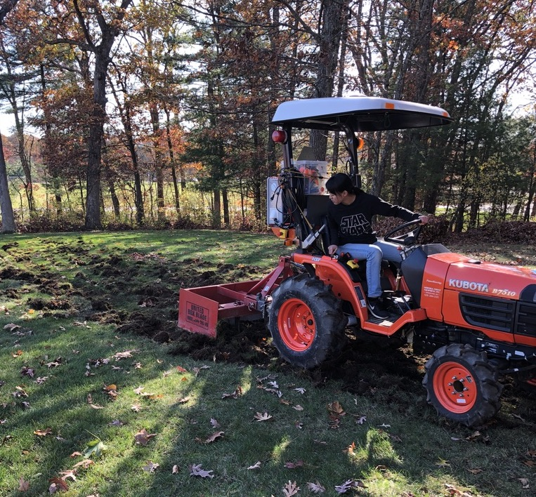
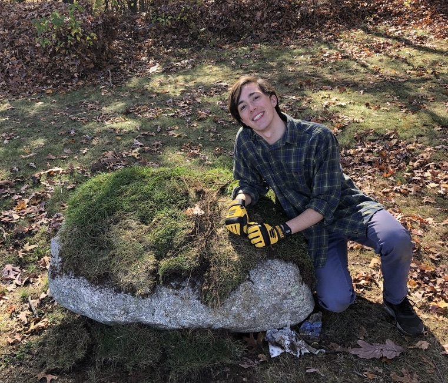

Olin Firefly Project
We are a group of students, staff and faculty at Olin College of Engineering who are inspired by fireflies and want to make the campus more welcoming to fireflies and other delightful arthropods.
What did we do?
- Learn from facilities about Olin's pesticide usage and researched alternative solutions
- Created a firefly habitat by planting wildflowers and establishing a "no rake and no spray" zone
- Reduced light pollution by change the overhang lights and the hallway lights in the AC to turn on later at Nautical or Astronomical Twilight instead of at sunset
- Learned more about fireflies from online research and Sara Lewis's book Silent Sparks
- Developed resources to share what we have learned with the Olin community
Why did we do this?
Fireflies used to be common in this part of Massachusetts, but now they are rarely seen. This reflects a broader trend. In the last 35 years the number of insects worldwide has dropped by 45%. This is already impacting the food chain. In the US, the number of birds has dropped by an astonishing 30%.
After researching the reasons for the decline of fireflies, and learned that they are mainly impacted by:
- Habitat loss
- Pesticides
- Herbicides
We then made the decision to convert lawn to wildflower patches. The wildflowers do not need any pesticides or herbicides. They also are an area that can accumulate leaf litter, which is ideal firefly habitat. As a bonus, the wildflowers do not need fertilizer. Fertilizer is generally created using fossil fuels and fertilizer emits nitrous oxide. Pound for pound, nitrous oxide has more global warming potential than carbon dioxide, so reducing fertilizer use lowers Olin's carbon emissions.
People might feel powerless when they hear about bird and insect populations dropping. But individual actions can make a difference here, and by changing what we plant in our homes and workplaces we can create viable habitat for these creatures.
The wildflower planting was a campus-wide effort! And we are deeply grateful for all the students, faculty, and staff that have pitched in to make this work. We are excited to see the wildflowers grow in the spring and hope that this is only the start of the Olin Firefly Project. We hope to expand our wildflower patches next year as well and that we see more fireflies on campus each summer.
Wildflower Patches
With the help of students, staff, and faculty, we were able to transform two areas of Olin into native wildflower patches. Through our research, we learned about how lawns and well-kept grass is bad for the environment. Tons of energy is expended to water, fertilize and maintain these areas, but none of this work is required for wildflower patches. By transforming parts of Olin campus from lawn to wildflower areas, we can reduce our carbon footprint and help to return Olin to a more natural state.
Proposal
We negotiated with many members of the Olin Facilities team to allow us to convert areas on campus into native wildflower patches.
We received approval for planing wildflowers in locations B, C and D. Location A was a stretch goal, but could be approved dependent on the results and reactions of the wildflowers in locations C and D.
Carrie and Anya calculated how many square feet of wildflower seeds we would needed to purchase.
Location A - 6,200 sqft
Location B - 2,000 sqft (Mostly trees)
Location C - 16,000 sqft
Location D - 5,000 sqft
Total - 29,200 sqft
(Even though these calculations were an overestimate, we would recommend buying even more seeds to ensure that the area is full covered.)
Raquel photoshopped what the different regions on campus might look like with wildflowers.
Location A

Location C

Location D

Tommy, Lauren, Ali and Robert cut wooden stakes and marked out where we wanted to plant wildflowers.
These areas were then approved by facilities and we submitted our order for seeds!

Tearing up the grass!
Emails
We sent emails to the Olin community asking for help with transforming the lawn to wildflower areas. The main seeding and stomping were to occur on Olin's day off, so we needed to turn the lawn into dirt that weekend in order to have it ready for the seed stompers on Monday. Here are some of the emails we sent to reach out to the community for help.
Formal Email
[Carpediem] Help fireflies, hang out outside!
Dearest Olin Community,
The Olin Firefly Project co-curricular has been working hard on making the campus a better place for fireflies and other delightful arthropods! We are replacing patches of grass on campus with wildflowers. This restores native(ish) habitat, and eliminates the use of pesticides, fertilizers, and herbicides in those patches (all of which harm fireflies!). The reduction in fertilizer will also reduce Olin's greenhouse gas emissions.
WE NEED YOUR HELP! We will be renting a sod-cutter tool for ONE DAY ONLY-- this Sunday! The more sod we can remove, the better. We have approval to remove sod from a large area, but we'll need a lot of help to finish it all. If you can spare any time (as little as 15 minutes) and don't mind getting a little messy, we'd love to have you join us! We'll be starting around 8 am, and wrapping up when we're done or when the sun sets (4:30 ish).
We'll either be between Lot A and the AC or in the hammock area behind Milas.
BIG THANKS to the students, faculty and staff of the Olin Firefly Project, and Rae-Anne, Vivien, Jeremy, Tom, Claire, Alex and Steve Tolley (Babson) for their support!!
Best,
Carrie
Student's Informal Email
[Helpme] Destroy Olin? Help us rip up the lawn!
Jaded? Have a lot of pent up rage for the institution? Want to destroy some property?The Olin Firefly group has permission from facilities to rip up the grass in a few marked locations around campus and we need your help to tear up the grass!
These areas will turn into wildflower areas like the one on the way to Trim, and will reduce pesticide usage on campus. Also the wildflower areas will be more environmentally friendly than grass as they will need less watering and maintenance. Bring your friends, shovels, rakes, work gloves or even bare hands to help us tare up the grass and make the campus more eco-friendly!
We are currently in the area behind Milas hall and next to the Great Lawn. Currently, Goddess Amy and her mighty Robo-tractor steed need help moving sod into a pile so that the tractor can tear up even more dirt if y’all could help with that now.
Please help us out!
Raquel “Destroyer of Sod” Dunoff
Helpme mailing list
Helpme@lists.olin.eduhttps://lists.olin.edu/mailman/listinfo/helpme
Photo Gallery of Sod Destruction
After an unsuccessful attempt at using the desoding machine, Amy and Olin's robotic tractor stepped in to help destroy some grass. We also had a handful of students lend a hand to move the dirt with shovels and Robert worked effectively with the roto-tiller.

Amy and her robotic tractor

David and his moss rock
Adrian and Amy
Adam, Anusha, and Ali
Seed Planting!
Step 1 - Spread the seeds
Corey spreading seeds

Sam and her seeds
Claire, Ben Linder, and Linda Canovan
Step 2 - Stomp the Seeds
Staff and faculty work together to stomp the seeds

Gretchen becomes one with the dirt
Stomping seeds is a great workout!
StompStomp-682790b3-d39c-49e6-8d92-d4203d160da7.mov
Stomp, stomp, stomp
What's Next?
We wait! The wildflowers should grow in the spring. Depending on their success, we could potentially expand the area of each patch and also to the other proposed regions. Each summer we hope to see more and more fireflies call Olin campus their home.
Fun Facts about Fireflies
- Fireflies are beetles
- Fireflies are called peenie-wallies in Jamaica
- Firefly larve live underground for 1-3 years before emerging to become fireflies.
- Larve can eat up to 70 snails
- If a firefly eat's too much, its abdomen stretches and prevents its feet from reaching the ground so they have to wiggle around on their backs
- After emerging from underground, they become a pupa for 2 weeks to become a firefly.
- Pupa live huddled under logs and glow when disturbed
- A firefly is only in the firefly state for a few weeks and their main goal is reproduction.
- Fireflies deposit eggs into moist soil, moss or in a rotting log
- Fireflies don’t see in color and cannot detect blue light very well
- Fireflies use their lights to attract a mate.
- The female fireflies perch on blades of grass and will blink to communicate with the male fireflies in the air.
- You can use LEDs to attract a female fireflies. They will blink back if they think you are a good match.
- This is also a great way to test if there is too much light pollution for the fireflies.
- Longer lasting blinks are more attractive to female fireflies, but they also make male fireflies more susceptible to predators.
- Fireflies will begin to flicker when their surrounding light dims from light to dark
- Fireflies blink slower in the cold
- Fireflies taste horrible to other animals
- They can defend themselves with reflex bleeding as their blood has a bitter taste and bad odor
- Firefly blood smells like a mix of charred bones and new car smell
- Female fireflies will lore male fireflies for sex but then eat them whole to acquire their blood toxins for self defense
- This Ted Talk https://www.ted.com/talks/sara_lewis_the_loves_and_lies_of_fireflies/up-next?language=en